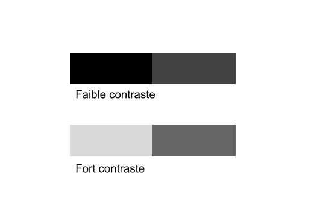
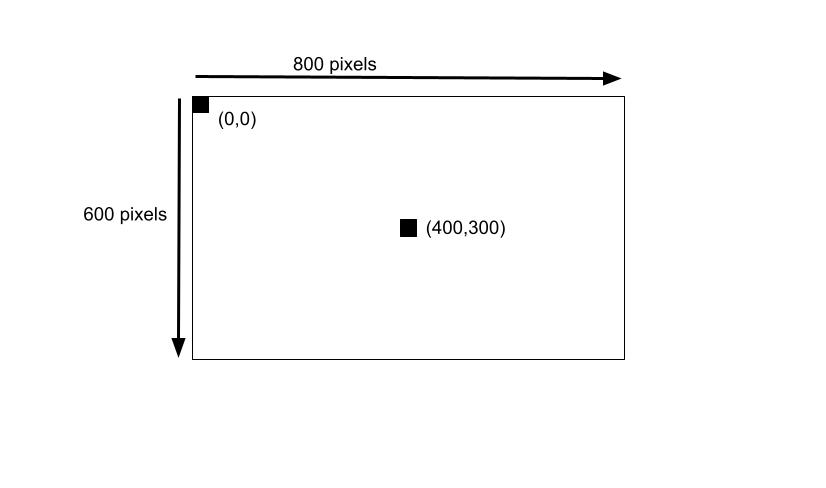
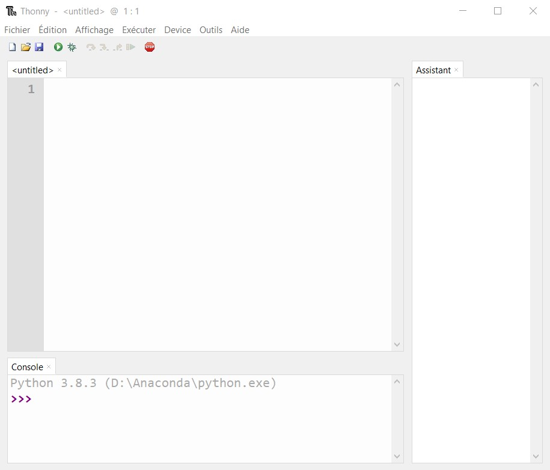

Lorsque l'on prend une photographie, l'appareil corrige lui-même l'image finale, mais le résultat n'est pas toujours satisfaisant. On peut alors utiliser des logiciels de traitement d'image afin d'améliorer le résultat. Il est possible de faire subir à l'image toutes sortes de transformations : changement de format, de définition, modification des couleurs, trucages variés.
Nous allons observé ces différents traitements grâce 2 activités.
Remarque :Vous trouverez ici, une présentation des bases de Gimp, cela pourrait vous être utile, pensez à y jeter un œil.
Contraste = Opposition entre deux valeurs, chacune faisant ressortir l'autre. L'oeil humain est particulièrement sensible au contraste, il est meilleur comparateur qu'analyseur.
 Utiliser des filtresNous allons utiliser le langage de programmation Python afin de directement travailler sur les pixels d'une image. Par travailler sur les pixels, j'entends déterminer la valeur du canal rouge, la valeur du canal et la valeur du canal bleu pour un pixel donné ou bien encore modifier carrément la couleur d'un pixel.
Avant de commencer à écrire un programme qui nous permettra de travailler sur les pixels d'une image, il est nécessaire de préciser que chaque pixel a des coordonnées x,y.
Comme vous pouvez le constater sur le schéma ci-dessus, le pixel de coordonnées (0,0) se trouve en haut à gauche de l'image. Si l'image fait 800 pixels de large et 600 pixels de haut, le pixel ayant pour coordonnées (400,300) sera au milieu de l'image.
Dans un premier temps nous allons utiliser une simple photo de pomme pour faire nos premiers essais, ensuite, vous pourrez travailler avec l'image de votre choix. L'image de la pomme se trouve dans le dossier d'images que vous avez télécharger dans l'activité 1. Cette image devra se trouver dans le même dossier que vos programmes Python.
-> Ouvrir ThonnyVous devez arriver sur une fenêtre semblable à celle-ci :
La partie basse appelée console sert en général à visualiser le résultat d'un programme python ainsi que les éventuels problèmes rencontrés.
La partie droite appelée Assistance sert d'aide en cas de problème, espérons ne pas en avoir besoin !
La partie centrale est la zone ou on entre du code python.
Le bouton rond vert avec une petite flèche blanche à intérieur sert à tester le code python.
Ce programme vous donne le canal rouge, le canal vert et le canal bleu du pixel de coordonnées (100,250) de l'image "pomme.jpg"
Voici une analyse ligne par ligne du programme ci-dessus :
r = v = b =
Il est possible de modifier les canaux RVB d'un pixel :
Regardez attentivement le centre de l'image, vous devriez voir un pixel rouge à la place d'un pixel vert.
Voici une analyse ligne par ligne du programme ci-dessus :
Les deux premières lignes sont identiques que celles à la question 1.
Appeler l'enseignant afin de valider cette question.
Modifiez un pixel c'est déjà bien, mais comment faire pour modifier plusieurs pixels ? La réponse est simple, nous allons utiliser des boucles "for";. Le but ici n'est pas de détailler le fonctionnement des boucles "for" en Python, vous devez juste comprendre que grâce à ces boucles nous allons pouvoir balayer toute l'image et ne plus nous contenter de modifier les pixels un par un.
Quelques commentaires sur ce programme :
Compliquons un peu la chose en modifiant tous les pixels de l'image :
Expliquez en quelques mots ce que fait ce programme.
. . . . . . . . . . . . . . . . . . . . . . . . . . . . . . . . . . . . . . . . . . . . . . . . . . . . . . . . . . . . . . . . . . . . . . . . . . . . . . . . . . . . . . . . . . . . . . . . . . . . . . . . . . . . . . . . . . . . . . . . . . . . . . . . . . . . . . . . . . . . . . . . . . . . . . . . . . . . . . . . . . . . . . . . . . . . . . . . . . . . . . . . . . . . . . . . . . . . . . . . . . . . . . . . . . . . . . . . . . . . . . . . . . . . . . . . . . . . . . . . . . . . . . . . . . . . . . . . . . . . . . . . . . . . . . . . . . . . . . . . . . . . . . . . . . . . . . . . . . . . . . . . . . . . . . . . . . . . . . . . . . . . . . . . . . . . . . . . . . . . . . . . . . . . . . . . . . . . . . . . . . . . . . . . . . . . . . . . . . . . . . . . . . . . . . . . . . . . . . . . . . . . . . . . . . . . . . . . . . . . . . . . . . . . . . . . . . . . . . . . . . . .
Appeler l'enseignant pour valider cette question.
Appeler l'enseignant pour valider cette question.
Petite astuce qui pourrait vous aider : en Python pour avoir une division entière (le résultat est un entier), il faut utiliser l'opérateur // à la place de l'opérateur /.
Appeler l'enseignant pour valider cette question.
Expliquer en quelques mots ce que fait le programme.
. . . . . . . . . . . . . . . . . . . . . . . . . . . . . . . . . . . . . . . . . . . . . . . . . . . . . . . . . . . . . . . . . . . . . . . . . . . . . . . . . . . . . . . . . . . . . . . . . . . . . . . . . . . . . . . . . . . . . . . . . . . . . . . . . . . . . . . . . . . . . . . . . . . . . . . . . . . . . . . . . . . . . . . . . . . . . . . . . . . . . . . . . . . . . . . . . . . . . . . . . . . . . . . . . . . . . . . . . . . . . . . . . . . . . . . . . . . . . . . . . . . . . . . . . . . . . . . . . . . . . . . . . . . . . . . . . . . . . . . . . . . . . . . . . . . . . . . . . . . . . . . . . . . . . . . . . . . . . . . . . . . . . . . . . . . . . . . . . . . . . . . . . . . . . . . . . . . . . . . . . . . . . . . . . . . . . . . . . . . . . . . . . . . . . . . . . . . . . . . . . . . . . . . . . . . . . . . . . . . . . . . . . . . . . . . . . . . . . . . . . . . .
Expliquer en quelques mots ce que fait le programme.
. . . . . . . . . . . . . . . . . . . . . . . . . . . . . . . . . . . . . . . . . . . . . . . . . . . . . . . . . . . . . . . . . . . . . . . . . . . . . . . . . . . . . . . . . . . . . . . . . . . . . . . . . . . . . . . . . . . . . . . . . . . . . . . . . . . . . . . . . . . . . . . . . . . . . . . . . . . . . . . . . . . . . . . . . . . . . . . . . . . . . . . . . . . . . . . . . . . . . . . . . . . . . . . . . . . . . . . . . . . . . . . . . . . . . . . . . . . . . . . . . . . . . . . . . . . . . . . . . . . . . . . . . . . . . . . . . . . . . . . . . . . . . . . . . . . . . . . . . . . . . . . . . . . . . . . . . . . . . . . . . . . . . . . . . . . . . . . . . . . . . . . . . . . . . . . . . . . . . . . . . . . . . . . . . . . . . . . . . . . . . . . . . . . . . . . . . . . . . . . . . . . . . . . . . . . . . . . . . . . . . . . . . . . . . . . . . . . . . . . . . . . .